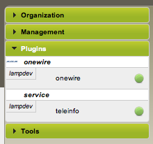
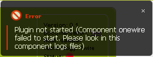

Installation and configuration of plugins¶
Install a plugin¶
As we said in Plugins overview, in this release there is no need to install plugins because we provide them all already installed.
Configure a plugin¶
No plugin enabled¶
If no plugin are enabled,you will have the following message in the Domogik administration panel:

Enable or disable an installed plugin¶
The best method¶
To enable the plugin named yourplugin, simply run this command:
$ dmgenplug yourplugin
To disable it:
$ dmgdisplug yourplugin
There is no need to restart anything : just reload administration page to see (or not) the plugin in the plugins list.
Another method¶
This method does exactly what above commands do, so please, use the previous method if you can ;). In <domogik_user_home>/.domogik.cfg, in the section [plugins], add (or replace) a line with:
yourplugin = enabled
There is no need to restart anything : just reload administration page to see the plugin in the plugin’s list.
Access to the plugin configuration page¶
You should now be able to access the plugin configuration page : go to Administration, and in the left menu, in “Plugins” section, you should see an entry for your plugin.
By clicking on this entry, you will access to the plugin configuration page.

Configure options for a plugin¶
Each plugin has its own configuration page. This page is accessible in the Domogik administration panel in the menu called plugin.
There is only an option which is common to all plugins : startup-plugin. If you check this option, the plugin will be started at Domogik startup.
The other options depend on the plugins used, so feel free to read the associated plugin documentation page.
Start / stop plugin¶
To start a plugin you have to configure it. If the plugin is not configured, the “Start plugin” button will remain inactive :

Start¶
If a problem occurs while starting the plugin, you will get a notification error like this :
If no problem occurs, you will get this notification :

Stop¶
If a problem occurs while stopping plugin, you will get a notification error like this :

If no problem occurs, you will get this notification :

What next?¶
- Use Helpers to find out information about plugin hardware
- Set up your devices